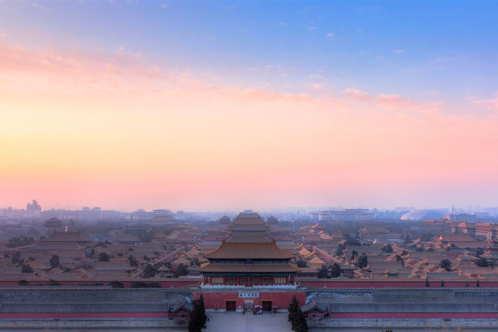
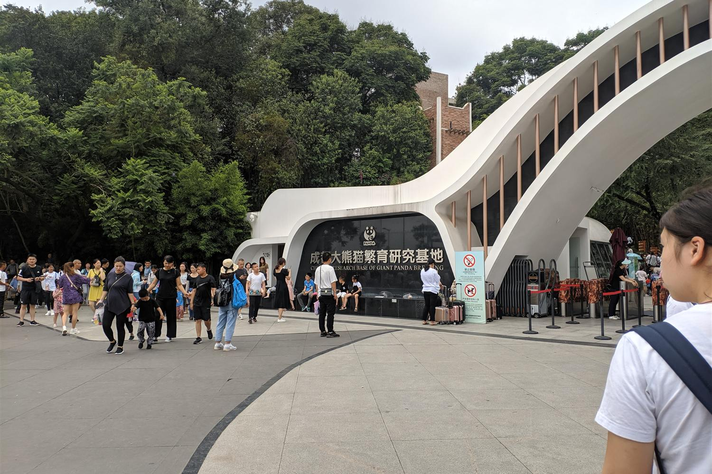
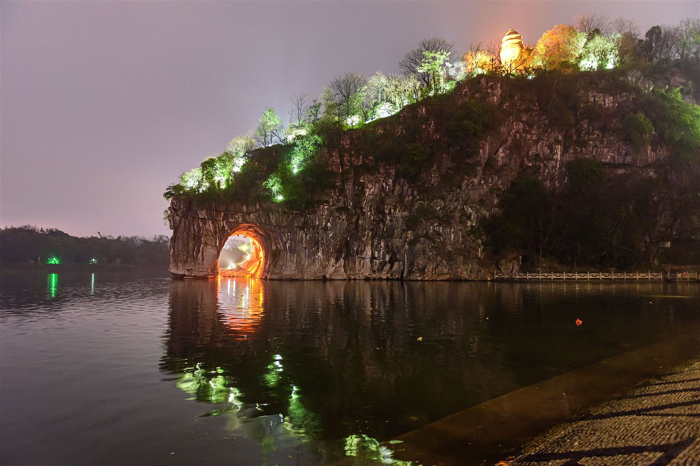
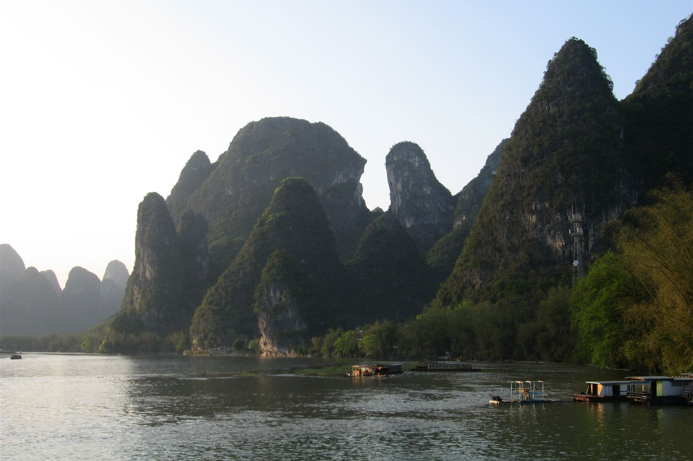
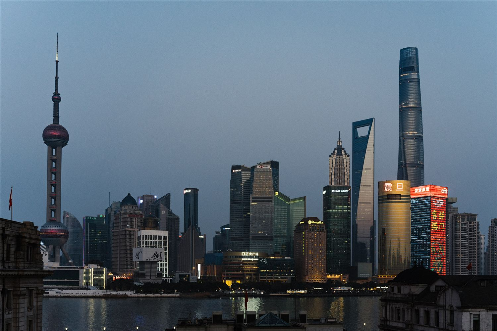

Ven 30 ott — sab 31 ottHU428 · 11h 05m
MXP 10:55
05:00 CKG
Milano Malpensa → Chongqing Jiangbeiarrivo il giorno dopo
Itinerario di viaggio
Venerdì 30 ottobre — lunedì 16 novembre · 18 giorni, 6 città e due scali
Hainan Airlines. Gli orari sono sempre locali. Il codice di conferma sta nelle prenotazioni.
Il ritorno è su un unico biglietto: i bagagli vengono imbarcati a Shanghai e riaperti solo a Malpensa, e la coincidenza di 2h45 a Shenzhen è protetta — se il volo da Pudong ritarda, la riprotezione è a carico della compagnia.
La linea continua sono i treni e la crociera sul fiume Li, quella tratteggiata in rosso sono i voli.

Realisticamente sono quattro ore utili, non dieci: il sole sorge alle 07:05 e prima è buio, con le luci di Hongyadong già spente.
Qui i bagagli li ritiri comunque. Chongqing è il tuo primo ingresso in Cina: dogana e immigrazione si fanno lì, quindi la valigia esce dal nastro anche se il biglietto è unico. Il check-in del volo interno apre poche ore prima delle 15:15, quindi per la mattina serve il deposito bagagli in aeroporto.
Volo CKG → PEK · 2h 25m

Città Proibita: prenotazione nominativa obbligatoria, si apre 7 giorni prima e va esaurita in poche ore. Serve il numero di passaporto.
Treno ad alta velocità Pechino → Xi'an · ~4h 30m

Treno ad alta velocità Xi'an → Chengdu · ~4h

Il giorno recuperato da Longji è finito qui: prima Chengdu aveva due giorni di cui uno intero mangiato da Leshan. Adesso la città esiste.
Treno ad alta velocità Chengdu → Guilin · ~5–7h

Il molo è fuori città: Zhujiang o Mopanshan, 20–25 km dal centro, 40–50 minuti di taxi. Le partenze sono tra le 9:00 e le 10:30 — prendi la prima, la luce è migliore. Da prenotare con largo anticipo.
Crociera sul fiume Li · ~4h 30m

La Grotta del Flauto di Canna è sulla strada per l'aeroporto, ma è illuminata a luci colorate come una discoteca. Saltala senza rimpianti se il tempo è poco.
Volo Guilin → Shanghai · ~2h 20m

Quattro notti sono tante per Shanghai sola, ed è un'occasione: Suzhou è a mezz'ora di treno e Hangzhou a un'ora. Due gite in giornata senza valigie recuperano esattamente le due città che questo itinerario aveva perso. In alternativa, il borgo d'acqua di Zhujiajiao è a un'ora di metro.
Per Pudong: metro linea 2 fino a Longyang Road, poi Maglev — 430 km/h, otto minuti. Circa un'ora dal centro. Fuori dall'hotel entro le 17:30.
Volo PVG → SZX · 2h 30m
Volo SZX → MXP · 12h 55m · arrivo lun 16 alle 07:40
Tre treni, un volo interno e una crociera. I treni aprono circa 15 giorni prima; il volo interno conviene prenderlo con più anticipo.
| Data | Tratta | Mezzo | Durata | Nota |
|---|---|---|---|---|
| 3 nov | Pechino → Xi'an | Treno G | ~4h30 | Beijing Xi → Xi'an Bei, partenza pomeridiana |
| 5 nov | Xi'an → Chengdu | Treno G | ~4h | Xi'an Bei → Chengdu Dong |
| 8 nov | Chengdu → Guilin | Treno G/D | ~5–7h | Chengdu East → Guilin North. Circa 20 partenze al giorno |
| 9 nov | Guilin → Yangshuo | Crociera | ~4h30 | Partenza 9:00–10:30 da Zhujiang o Mopanshan, 50 min dal centro |
| 11 nov | Yangshuo → aeroporto Guilin | Auto | ~1h30 | Il volo è di sera: si parte da Yangshuo nel tardo pomeriggio |
| 11 nov | Guilin → Shanghai | Volo | ~2h20 | Da Guilin Liangjiang. Atterra a Pudong, lo stesso aeroporto del ritorno |
Treni su Trip.com o sull'app ufficiale Railway 12306, che ora accetta passaporti stranieri. Per il volo interno, Trip.com copre bene i vettori cinesi. Il passaporto serve sempre, sia per acquistare sia per salire a bordo.
Le prenotazioni confermate stanno in una pagina a parte, cifrata: hotel, codici, orari e indirizzi da mostrare al tassista. Serve la passphrase.
Nessun visto. Fino al 31 dicembre 2026 i passaporti ordinari italiani entrano in Cina senza visto per soggiorni fino a 30 giorni, turismo incluso. Il viaggio ne dura 18.
Il passaporto deve avere almeno 6 mesi di validità residua. Prima dell'arrivo si compila la carta d'arrivo digitale, che ha sostituito il modulo di carta.
Sei spostamenti con la valigia, di cui uno in aereo con i limiti dei vettori interni: uno zaino o un trolley piccolo. Strati, un guscio impermeabile per il Guangxi, scarpe già rotte.
Il viaggio attraversa venti gradi di differenza. Non serve roba pesante: servono strati.
| Tappa | Giorni | Medie di novembre | Com'è l'aria |
|---|---|---|---|
| Chongqing | 31 ott | 14–20° | umida, cielo bianco |
| Pechino | 31 ott – 3 nov | 3–14° | secca e ventosa, all'alba pungente |
| Xi'an | 3–5 nov | 4–15° | secca, spesso foschia |
| Chengdu | 5–8 nov | 11–18° | umida, il sole si vede poco |
| Guilin e Yangshuo | 8–11 nov | 13–22° | umida e mite |
| Shanghai | 11–15 nov | 10–18° | umida, vento lungo il fiume |
| Shenzhen | 15–16 nov | 18–25° | tiepida, ma è solo transito |
Sono medie storiche di novembre, non previsioni: servono per decidere cosa mettere in valigia. Il meteo vero si guarda una settimana prima.
Maglietta, uno strato caldo leggero (pile o lana merino) e un guscio antivento. A Pechino il freddo è secco e tirato dal vento: il guscio conta più dello spessore. Al sud i primi due bastano, e lo strato caldo torna in valigia.
Questo itinerario si fa in piedi: l'Esercito di Terracotta, la Città Proibita e i suoi cortili, la salita alla collina di Laozhai. Comode e già rotte, con una suola che tenga sullo sterrato. Le scarpe nuove qui si pagano care.
Quattro ore e mezza su una barca in movimento: anche con 20 gradi il vento non smette. Antivento e qualcosa per il collo, più del maglione.
Dopo una cena sichuanese l'odore di olio e peperoncino non va più via fino al lavaggio. Non metterti l'unico strato buono che hai.
Quindici notti in sei città: gli hotel lavano, e in valigia lo spazio serve al ritorno. Un ombrello compatto vale il posto che occupa — al nord novembre è secco, ma Chengdu e Guilin piovigginano volentieri.
La Cina sta tutta in un fuso orario solo, quindi il sole non tramonta alla stessa ora: a Shanghai è buio prima delle cinque, a Chengdu c'è ancora luce alle sei.
| Tappa | Alba | Tramonto | Luce |
|---|---|---|---|
| Chongqing · 31 ott | 07:05 | 18:08 | 11h 05m |
| Pechino | 06:41 | 17:12 | 10h 30m |
| Xi'an | 07:06 | 17:49 | 10h 45m |
| Chengdu | 07:22 | 18:12 | 10h 50m |
| Guilin e Yangshuo | 06:50 | 17:53 | 11h 00m |
| Shanghai | 06:19 | 16:57 | 10h 35m |
Cosa cambia: le giornate si programmano al mattino. La crociera sul fiume Li parte presto anche per questo. E il Bund «di notte» a Shanghai è già notte alle cinque e mezza: la sera è lunga, il pomeriggio no.
Orari calcolati per le coordinate di ogni città, con un margine di un paio di minuti.
Questa rotta viene da un itinerario kimkim pensato per famiglie con bambini. Ecco cosa ne consegue.
Longji, perché a metà novembre il riso è già mietuto. E tutto l'apparato per famiglie dell'originale: Disneyland, slittino sulla Muraglia, corsi di gnocchi, repliche di guerrieri di terracotta, lezioni di kung fu. Il giorno di Longji è andato a Chengdu.
Mutianyu è restaurata, comoda, con la funivia — e affollata. Jinshanling è a tre ore da Pechino ma si cammina per ore su tratti mai ricostruiti, quasi da soli. A novembre l'aria è la più limpida dell'anno. È l'unica scelta rimasta aperta a Pechino.
Rispetto alla versione precedente spariscono Datong, Pingyao, Huangshan e Hangzhou: la Cina del nord e delle montagne. Arrivano Sichuan e Guangxi. È un viaggio più classico e più vario nei paesaggi, meno insolito nei luoghi.
Sono il margine di manovra. Suzhou a mezz'ora, Hangzhou a un'ora, Zhujiajiao a un'ora di metro: puoi recuperare in giornata proprio ciò che questa rotta toglie. Oppure spostare un giorno indietro, a Chengdu.
Solo Guilin–Shanghai si fa in aereo, perché in treno sarebbero più di dieci ore. Tutto il resto è alta velocità: Pechino–Xi'an, Xi'an–Chengdu e Chengdu–Guilin, quest'ultima in circa cinque ore attraverso Chongqing e Guiyang. Meno aeroporti, meno anticipi, e i bagagli non li pesa nessuno.
Il giorno liberato da Longji l'ho dato a Chengdu, che ne aveva più bisogno: Leshan si mangiava l'unica giornata piena. L'alternativa è darlo a Yangshuo, che con tre notti diventa un posto in cui stare invece che una tappa. Si sposta in un minuto.
Le caselle restano spuntate, ma solo su questo dispositivo e in questo browser: non le ritrovi sul telefono se le spunti dal computer.
Numeri di treno, nomi di hotel, cose che ti dicono e che non vuoi perdere.
Questa nota resta solo su questo dispositivo. Vive nella memoria di questo browser: non passa da nessun server, non finisce su GitHub e non la ritrovi altrove. Se cancelli i dati del browser, o apri il sito da un altro telefono, non c'è. Per le cose che non puoi perdere, tienine una copia altrove.